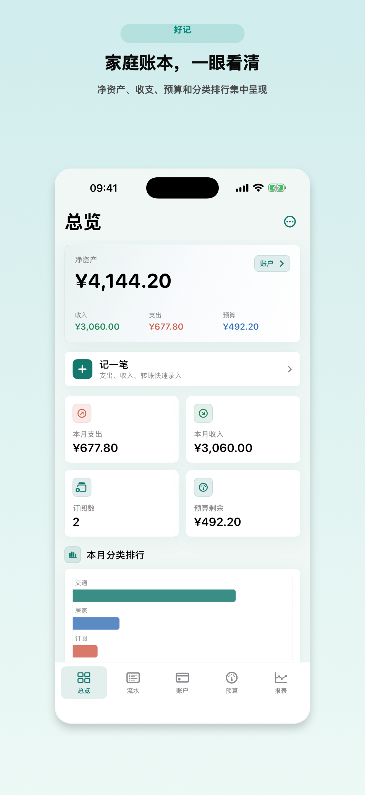
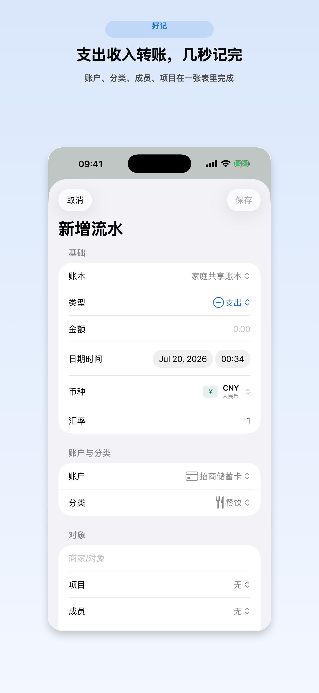
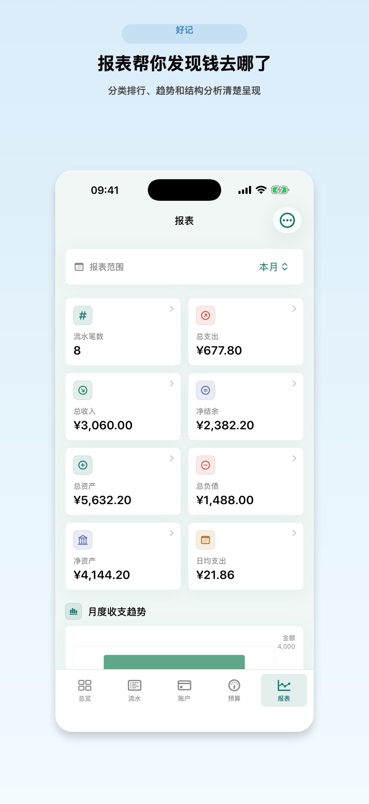
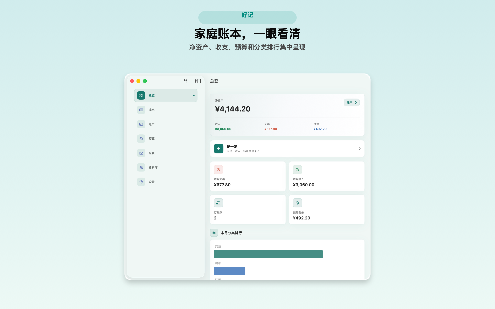

好记 / Apple Ledger
Apple 设备上的本地优先财务管理
为个人、家庭、旅行、项目和订阅账单做本地优先记账，支持共享账本、预算、报表、Widget、iCloud 同步，以及仅存本机钥匙串的冷钱包保险箱。


完整记账基础
记录支出、收入、转账、退款、报销、借贷、分期、手续费和余额调整。
高级功能免费
工程内无 StoreKit 商品、无会员/Pro 订阅、无付费墙；无限账本/账户、多币种、iCloud 同步、报表、预算、周期账单、Widget、Watch、快捷指令、主题、隐私锁和 OCR 都免费开放。
导入导出与 OCR
支持 JSON、CSV、OFX、QIF、PDF、ZIP 和 Excel 工作流，可识别常见银行 CSV 表头，并把票据图片和本机 Vision OCR 结果保存到记录中。
私有同步与共享
使用本地 SwiftData、可选私有 CloudKit 同步、Apple 系统 CloudKit Sharing 邀请、Widget/Watch App Group 共享、生物识别锁、本地通知和系统管理的远端变更通知。
冷钱包保险箱
可保存钱包地址、助记词、私钥、Keystore JSON、硬件钱包备份备注和相关提醒。敏感秘密只保存在本机 this-device Keychain，不进入 iCloud 同步、共享账本、App 备份、报表或导出文件。
截图
当前截图已换成“好记”送审包里的总览、快捷记账、预算、报表、共享账本、iPad 和 Mac 页面。




1.0 版本范围
当前项目已包含本地账本、账户、流水、预算、报表、导入导出、隐私锁、提醒、App Shortcuts、Widget、Watch 快捷记账、本机 OCR 票据、银行 CSV 解析、可选私有 iCloud 同步、CloudKit Sharing 共享账本，以及本机冷钱包保险箱。真正上架前仍需完成 Apple Developer 签名、App Group、CloudKit production schema、APNs production entitlement 检查和 TestFlight 真机复验。